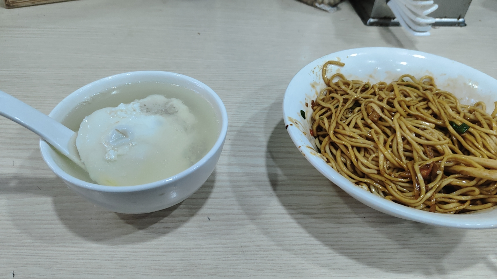
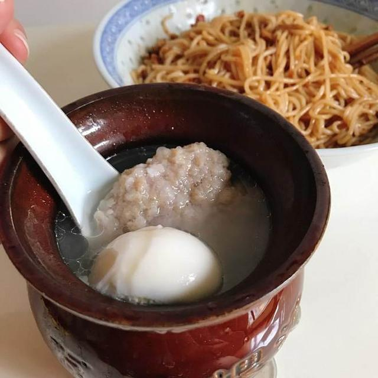
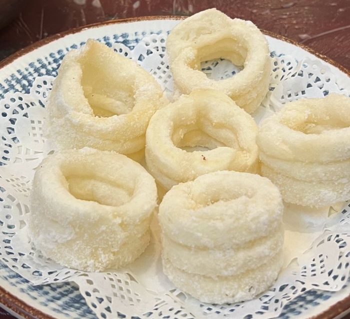
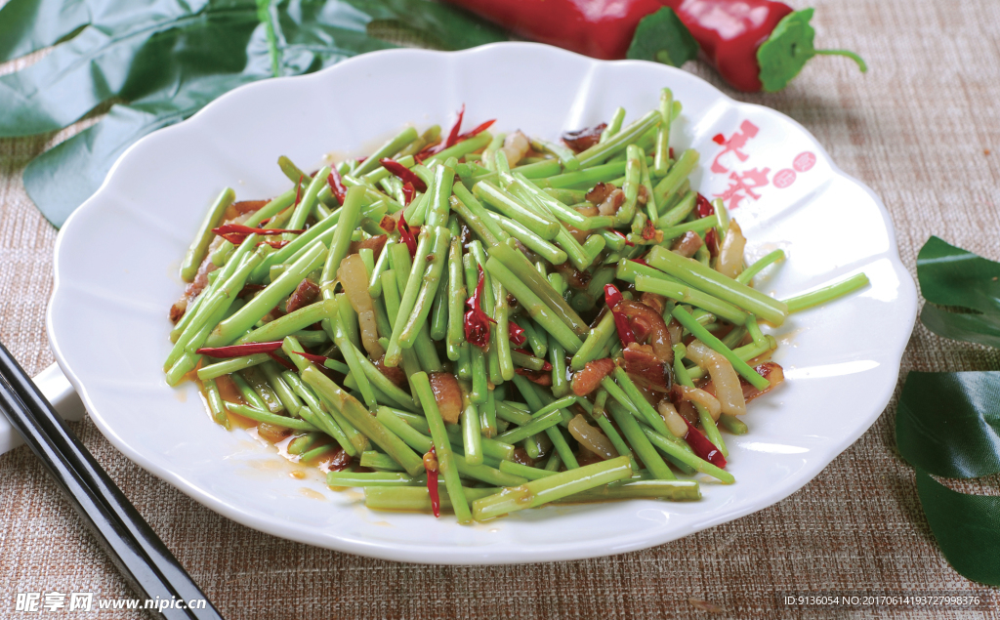

恰噶！南昌味道
品味地道美食，聆听赣语乡音
必吃美食

图片缺失：请放入 banfen.jpg南昌拌粉
爽滑劲道的米粉，配上萝卜干、花生米、辣椒油，搅拌均匀，香气扑鼻。是南昌人早餐的绝对主角。

图片缺失：请放入 waguan.jpg瓦罐汤
用传统瓦罐慢火煨制数小时，汤汁浓郁，营养丰富。排骨藕汤、鸡蛋肉饼汤都是经典选择。

图片缺失：请放入 baitanggao.jpg白糖糕
南昌传统甜点，外酥里嫩，裹上一层洁白的白糖粉。软糯香甜，是老一辈南昌人的童年回忆。

图片缺失：请放入 lihao.jpg藜蒿炒腊肉
"鄱阳湖的草，南昌人的宝"。藜蒿清香脆嫩，搭配咸香腊肉，是赣菜中的经典名菜。
南昌话小词典
鼠标悬停卡片查看普通话含义
恰噶
(qià gā)
点击翻转
厉害 / 棒
用来称赞某人或某事非常出色
恰饭
(qià fàn)
点击翻转
吃饭
"恰"在南昌话中就是"吃"的意思
老表
(lǎo biǎo)
点击翻转
表亲 / 朋友
对江西人的亲切称呼，也指表兄弟
孺子路
(rú zǐ lù)
点击翻转
著名美食街
南昌最热闹的美食一条街